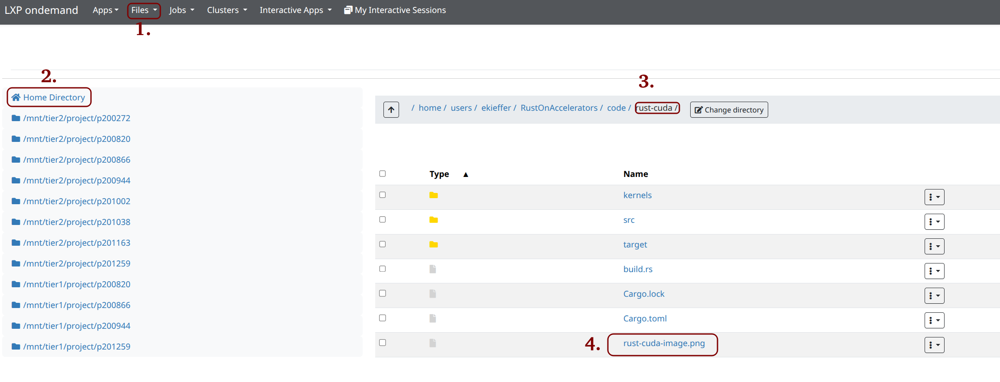
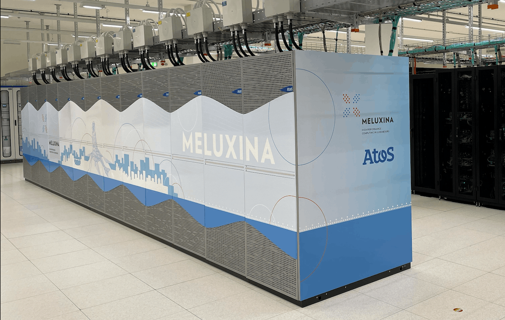
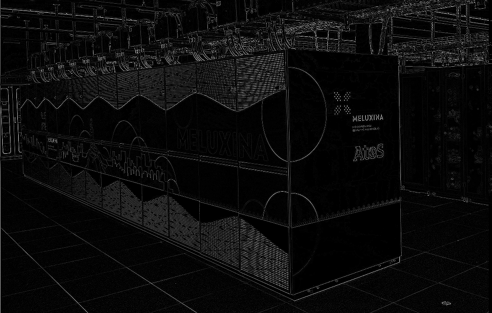

A Rust host code executing CUDA kernel¶
Host code¶
- Line 1-4: we import the necessary modules. The prelude in Rust is a module that re-exports commonly used types and traits so you can import them all at once.
- Line 7: the
OUT_DIRenvironment variable contains the path to the device code build usingbuild.rs. -
Line 9-81: the run function applies the following kernel (3 X 3):
$$ \begin{bmatrix} 0 & 1 & 0\\ 1 & -4 & 1\\ 0 & 1 & 0 \end{bmatrix} $$
-
We used the cust crate, a Safe, Fast, and user-friendly wrapper around the CUDA Driver API.
1 2 3 4 5 6 7 8 9 10 11 12 13 14 15 16 17 18 19 20 21 22 23 24 25 26 27 28 29 30 31 32 33 34 35 36 37 38 39 40 41 42 43 44 45 46 47 48 49 50 51 52 53 54 55 56 57 58 59 60 61 62 63 64 65 66 67 68 69 70 71 72 73 74 75 76 77 78 79 80 81 82 83 84 85 86 87 88 89 90 91 92 93 94 95 96 97 98 99 100 101 102 103 104 105 106 107 108 109 110 111 112 113 114 115 116 117 118 119 120 121 122 123 124 125 126 127 128 129 130 131 132 133 134 135 136 137 138 139 140 141 142 143 144 145 146 147 148 | |
1 2 3 4 5 6 7 8 9 10 11 12 13 14 15 16 17 18 19 20 21 22 23 24 25 26 27 28 29 30 31 32 33 34 35 36 37 38 39 40 41 42 43 44 45 46 47 48 49 50 51 52 53 54 55 56 57 58 59 60 61 62 63 64 65 66 67 68 69 70 71 72 73 74 75 76 77 78 79 80 81 82 83 84 85 86 87 88 89 90 91 92 93 94 95 96 97 98 99 100 101 102 103 104 105 106 107 108 109 110 111 112 113 114 115 116 117 118 119 120 121 122 123 124 125 126 127 128 129 130 131 132 133 134 135 136 137 138 139 140 141 142 143 144 145 146 147 148 149 150 151 152 153 154 155 156 | |
Some difference with the two host code version
Both code should be in theory the same. Nevertheless, the device code for the rust-cuda crate is in Rust and care should be taken when launching the kernel.
According to the Rust-CUDA Kernel ABI, immutable slices should be passed via pointer/length pairs while buffers only requires a pointer.
The reason behind this is the approach taken by Rust-CUDA
The Rust CUDA Project is a project aimed at making Rust a tier-1 language for GPU computing using the CUDA Toolkit. It provides tools for compiling Rust to fast PTX code as well as libraries for using existing CUDA libraries with it.
So writing kernel in Rust requires the use of the LLVM PTX backend. The device Rust code is translated to PTX using the rustc_codegen_nvvm tool.
The
rustc_codegen_nvvmis a rustc backend that targets NVVM IR (a subset of LLVM IR) for the libnvvm library.Generates highly optimized PTX code which can be loaded by the CUDA Driver API to execute on the GPU.For now it is CUDA-only, but it may be used to target AMD GPUs in the future.
For more details, please have a look at https://rust-gpu.github.io/rust-cuda/guide/getting_started.html
Device code¶
C/C++ device code: building the CUDA kernel with nvcc¶
Rust device code: building the CUDA kernel with Rust-CUDA¶
Access data in the Rust kernel
input and weights are normal slices but the output is a raw pointer. Since output is mutable state shared by multiple kernels executing in parallel.
Using &mut [T] would incorrectly indicate that it is non-shared mutable state, and therefore Rust CUDA does not allow mutable references as argument to kernels. Raw pointers do not have this restriction. Therefore, we use a pointer and only make a mutable reference once we have an element (c.add(i)) that we know won’t be touched by other kernel invocations.
For more details, please have a look at https://rust-gpu.github.io/rust-cuda/guide/getting_started.html
Shared memory in the Rust kernel
- Shared GPU memory is modelled with
#[address_space(shared)] static mut - Unlike standard
static mut, it is not initialized, and only exists for the duration of the kernel's (multi-)execution - Because it is not initialized, it must be marked with
MaybeUninit - Every
writeattempt requires an unsafe block because writing astatic mutis always unsafe - Every
readshould subsequently usedassume_init.
Execution on MeluXina¶
You can choose to execute the build and execute the code within an 1. interactive session or by 2. submitting a batch job.
Interactive session
- Once you have executed the code, please release the node as you won't need it anymore.
- To do so, use
CTRL-d.
1. Interactive execution¶
- Apply the following commands:
2. Batch execution¶
- Make sure you are not already on an interactive session.
-
Then apply the following commands:
-
The
sbatchcommand should outputSubmitted batch job <job_id>. -
Keep in mind the job id, it will be useful to look at the logs.
-
To see the status of your job, please use the following command:
squeue -j <job_id>. -
Check the output with the following command:
cat rust-nvcc-cuda-<job_id>.out. -
You can also check for possible errors with
cat rust-nvcc-cuda-<job_id>.err.
Results¶
-
To open the resulting images, you can either:
-
Use the
rsynccommand from a terminal: -
Or use the OpenOnDemand portal. Once logged in, select "Files" -> "Home Directory" -> "RustOnAccelerators"

-
Click on the image.
-
You should see the following results for both executions:
 |
 |
|---|---|
Explore Further¶
- Try to modify the kernel coefficients
- Try to change the original image
- Adapt the code for Tiled Matrix Multiplication